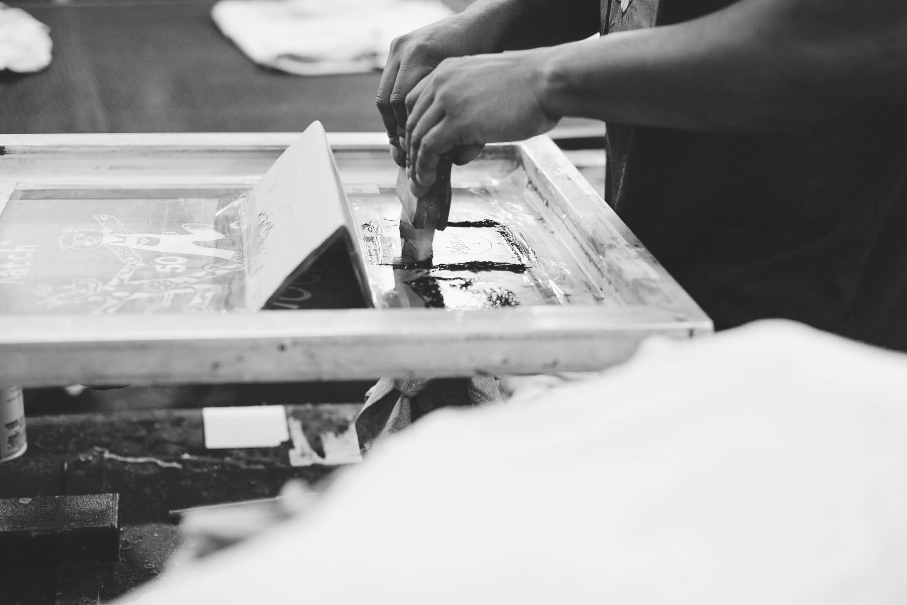
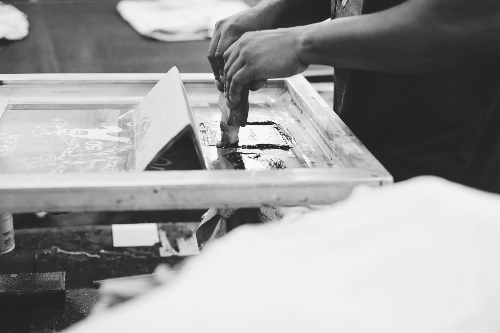

Last year, nearly 2 million acres were devastated by the deadliest, most destructive wildfires in California history.
Wildfiers
8,527
Insurance Claim Damages
$12B
Acres Burned
1,893,913

Stuck in the middle.
Surrounded by smoke and inspired by the communities’ resilience, our design team reimagined the California Grizzly and used it to create custom tees, pins and posters.
Our t-shirts (kids and adult sizes), pins, and posters will be available for purchase at our exclusive pop-up shop during our SF Design Week Studio Crawl this Friday, June 21. You can choose what amount to donate. All proceeds will go to the American Red Cross to help the communities that are still displaced.
 
